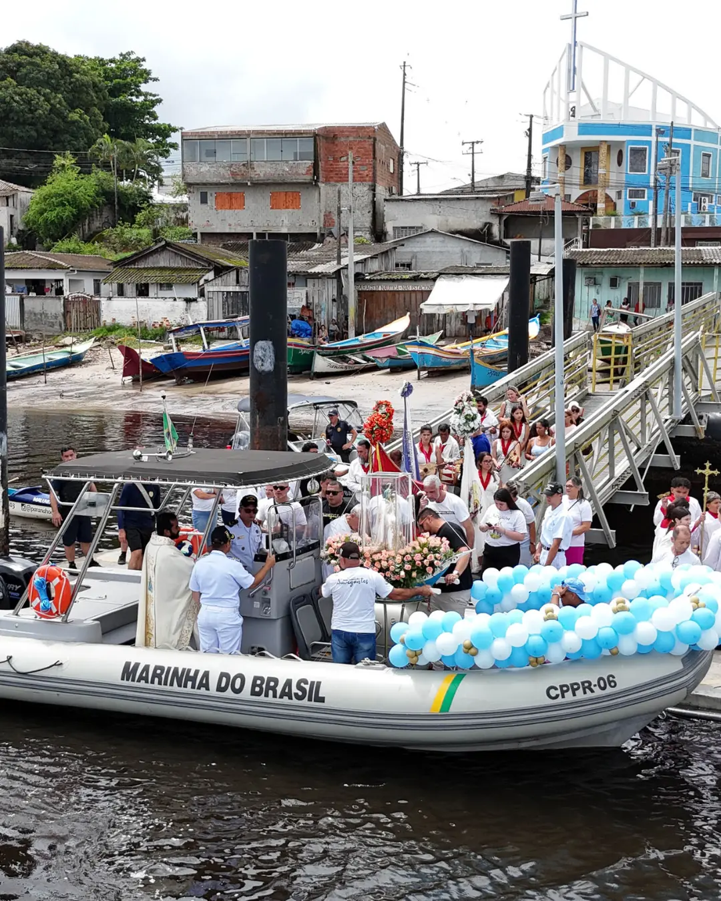
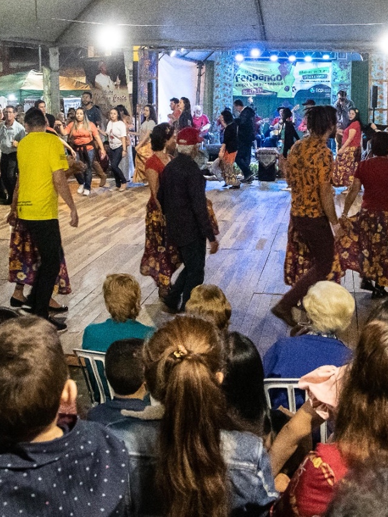
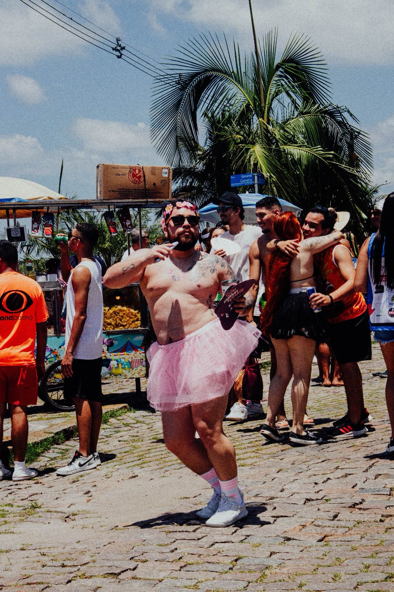
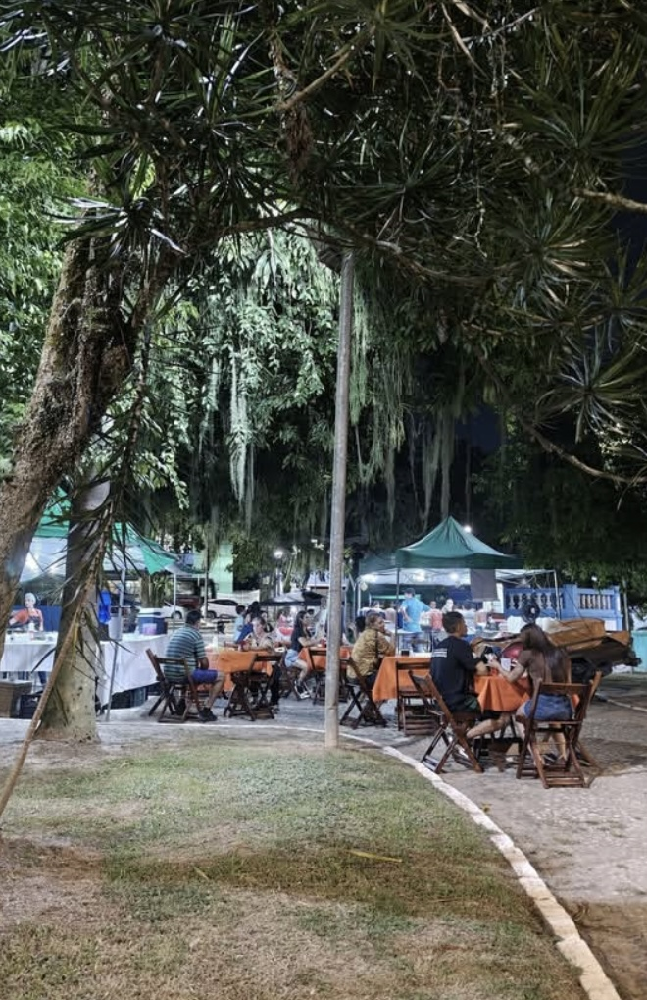
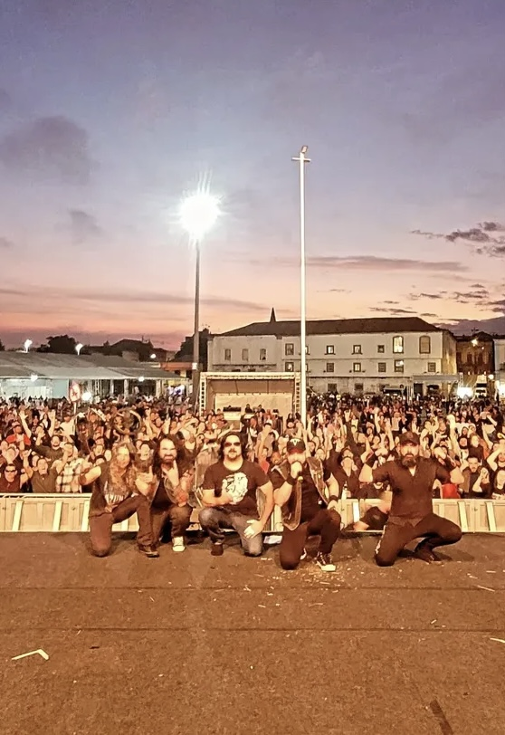
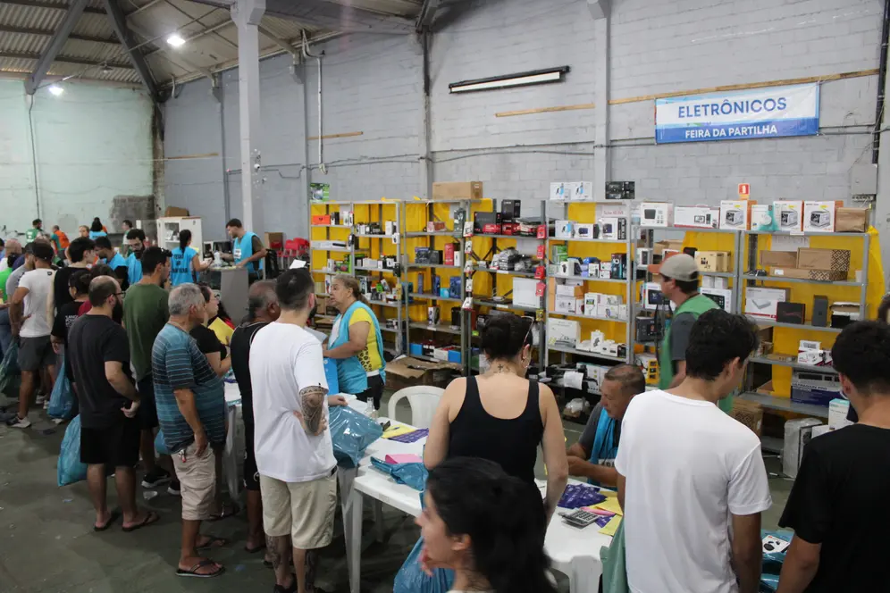
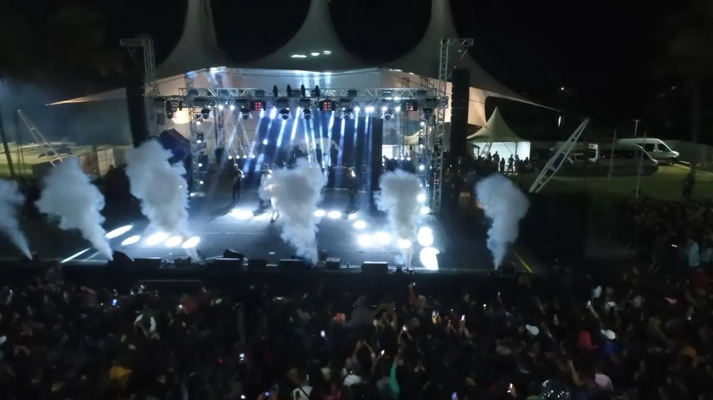
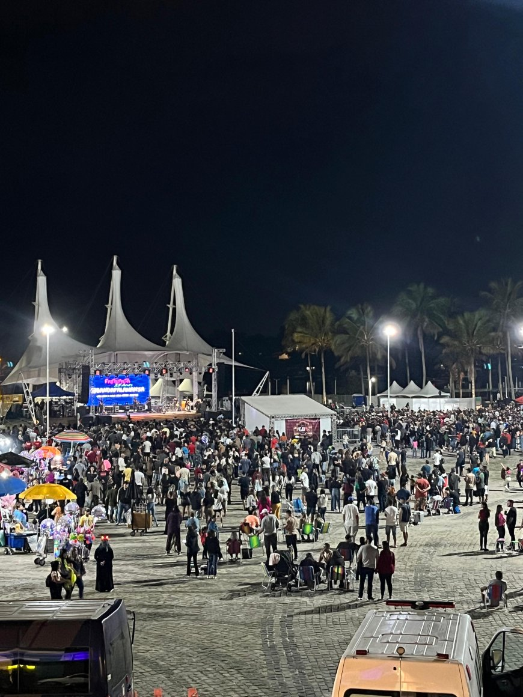

A Festa de Nossa Senhora dos Navegantes em Paranaguá é uma celebração religiosa que ocorre anualmente na Ilha dos Valadares, com atividades religiosas, artísticas e culturais, e culmina em uma procissão marítima. A festa é uma tradição importante para a comunidade local e atrai fiéis e turistas.
Detalhes da Festa:
Local: Ilha dos Valadares, Paranaguá, PR.
Periodicidade: Anualmente, geralmente em janeiro/fevereiro.
Programação:
Missas, novenas e adoração ao Santíssimo Sacramento.
Shows artísticos e quermesses.
Gastronomia típica e show de prêmios.
Procissões marítimas, com destaque para a procissão no Rio Itiberê.
Duração: A festa geralmente dura alguns dias, começando no final de janeiro e se estendendo até o início de fevereiro.
Atrações: A festa é conhecida por sua atmosfera festiva, com diversas atividades religiosas e de entretenimento.
Público: A festa atrai tanto moradores de Paranaguá e da região quanto turistas e devotos de Nossa Senhora dos Navegantes.
Significado: A festa é uma homenagem a Nossa Senhora dos Navegantes, padroeira da Ilha dos Valadares e dos navegantes, pescadores e marinheiros

FESTA DO FANGANDO
Festa Nacional do Fandango Caiçara de Paranaguá é um evento anual que celebra a cultura caiçara, uma expressão musical e cultural típica do litoral do Paraná. A festa promove o fandango, um tipo de dança e música tradicional, e inclui apresentações de grupos de fandango, oficinas, mesas de debate e feiras de artesanato e gastronomia caiçara.
Detalhes:
Local:
A festa geralmente acontece na Ilha dos Valadares, em Paranaguá,
ou na Praça Mário Roque.
Data:
A festa é anual e acontece geralmente em agosto.
Atividades:
A festa inclui:
Apresentações de grupos de fandango.
Oficinas de música e dança.
Mesas de debate sobre cultura caiçara.
Feiras de artesanato e gastronomia caiçara.
Outras atividades culturais.

BANHO Á FANTASIA
O Banho à Fantasia, maior evento de pré-Carnaval de Paranaguá, é uma celebração popular que reúne blocos carnavalescos e atrai foliões de todo o Paraná. Mais do que uma simples festa, é uma tradição enraizada na cultura parnanguara, que transforma as ruas e o Rio Itiberê em um palco de alegria e cores.
No entanto, a história do Carnaval de Paranaguá não começa com o
Banho à Fantasia.
Desde o final do século XIX, a cidade já vibrava com festejos carnavalescos.
Em 1887, um grupo de amigos conhecido como Bilontras organizava desfiles
marcados pelo humor e pela irreverência. No início do século XX,
o Carnaval de rua ganhou ainda mais força, e os primeiros cordões
e blocos passaram a desfilar pelas ruas, encantando a população
com danças e fantasias coloridas.
A origem do Banho à Fantasia
A tradição do Banho à Fantasia remonta a 1930, quando
Antônio Benedito da Cunha, vindo de Santos (SP), trouxe para Paranaguá
a ideia do “Banho de Mar à Fantasia”. Inspirado pelo bloco santista “Dona Doroteia,
Vamos Furar Aquela Onda”, Antônio organizou o primeiro evento no bairro Santa Rita.
Os foliões seguiam em cortejo, carregando uma boneca de pano chamada Doroteia,
que era levada até o Rio Itiberê para um banho simbólico, marcando o auge da festa.
Nos primeiros anos, o evento era embalado por batuques e marchinhas,
e as fantasias, simples, eram feitas de papel crepom.
A concentração dos blocos incluía o preparo de uma mistura de bebidas em um caldeirão, e a diversão só terminava com o mergulho coletivo no rio.

FEIRA DA LUA
Leva lazer, artesanato e gastronomia para a Praça dos Leões, em Paranaguá
No Centro de Paranaguá atração chama atenção pela variedade dos produtos oferecidos pelos feirantes. Tapioca, acarajé, espetinho, cerveja artesanal, caldo de quenga, sucos, caldo de cana, pastel, salgados, doces, pão com bife, artesanatos, bijuterias e muito mais. É essa grande variedade de produtos gastronômicos e artesanais que quem visita a Feira da Lua pode encontrar. Todas as terças-feiras, das 14 às 23h, a Praça Eufrásio Correa, conhecida como Praça dos Leões, no Centro de Paranaguá, recebe a Feira da Lua que foi criada com o objetivo de enaltecer a cultura familiar, oferecer entretenimento à população e incentivar e valorizar o profissional do artesanato e da gastronomia.

FESTA DOS MOTOQUEIROS
O objetivo, de acordo com a Prefeitura de Paranaguá, é promover e estimular o turismo, reunindo motociclistas de motos clubes do Brasil e de outros países com mais de 150 motoclubes reunidos. O evento ao ar livre terá feira gastronômica, shows artísticos, shows com manobras radicais e outras atrações que ainda serão divulgadas. Acontecem do dia 02 à 04 de agosto.
Encontro Internacional de Motociclistas Paranaguá.
O evento acontece ao ar livre numa vasta programação que inclui: recepção dos participantes, abertura oficial do evento, benção dos motociclistas, feira do artesanato, feira gastronômica, feira de produtos direcionados aos motociclistas, shows artísticos/culturais, shows com manobras radicais, show pirotécnico, entre outros.

FEIRA DA PARTILHA
A Feira da Partilha, evento tradicional realizado na cidade de Paranaguá, segue como um marco de solidariedade no litoral paranaense.
Organizada anualmente, a Feira da Partilha utiliza mercadorias apreendidas e doadas pela Receita Federal para beneficiar instituições filantrópicas da região, promovendo transformações concretas e impactando a vida de milhares de pessoas em situação de vulnerabilidade.
Os produtos são comercializados por voluntários, com os recursos revertidos para projetos que promovem ou contribuam para a autossustentabilidade das entidades assistidas. A Feira da Partilha reflete o poder da colaboração coletiva e do trabalho voluntário para transformar realidades. Mais do que um evento, ela se tornou um verdadeiro movimento de solidariedade, provando que sonhos podem, sim, tornar-se realidade quando compartilhados e trabalhados com dedicação.
Com o olhar voltado para o futuro, a Feira da Partilha continua sendo um exemplo de como a abnegação e a união podem fazer a diferença em Paranaguá e no litoral do Paraná.

ANIVERSÁRIO DE PARANAGUÁ
O aniversário de Paranaguá é comemorado a 29 de julho, data em que a cidade completa mais um ano de existência. Em 2023, Paranaguá completou 375 anos, comemorando a data com diversas atividades e eventos, incluindo a inauguração de obras e a apresentação de shows.
É uma data importante para a cidade, que é o município mais antigo do Paraná e um dos principais portos do estado. A cidade tem uma rica história e cultura, e o aniversário é uma oportunidade para celebrar as conquistas e tradições da região. A comunidade evangélica fecha as festividades do aniversário de Paranaguá com a Marcha para Jesus. O evento é organizado pela Associação dos Ministros Evangélicos de Paranaguá (AMEP), tendo como principal objetivo unir as igrejas cristãs em um ato de amor e fé, glorificando o Senhor Jesus.

FEJUPA
A Fejupa, ou Festa Junina de Paranaguá, é uma festa tradicional que celebra São João e as festas juninas em Paranaguá, no litoral do Paraná. A festa ocorre anualmente e, após um hiato, voltou a ser realizada em 2024, atraindo moradores e turistas para a Praça de Eventos Mário Roque. A programação inclui quadrilhas, comidas típicas, shows, e atividades com pets, entre outras atrações.
Local:
Praça de Eventos Mário Roque, em Paranaguá.
Programação:
Quadrilhas, comidas típicas, shows locais, regionais e nacionais,
apresentações diversas, e atividades com pets.
Objetivo:
Celebrar São João, resgatar e valorizar as tradições juninas,
promover o turismo e movimentar a economia local.
História:
A Fejupa surgiu nos anos 80 como uma festa comunitária, organizada
pelos moradores, e se tornou um evento importante
que reunia famílias e amigos.
Impacto:
A festa movimenta a cidade, atrai visitantes, gera renda para hotéis,
restaurantes e comércios locais.
Retorno:
A Fejupa retornou após um hiato de 22 anos, informou a Prefeitura de Paranaguá em 2024.

FESTA DO ROCIO
A Festa de Nossa Senhora do Rocio em Paranaguá, Paraná, é uma festa religiosa anual em honra à padroeira do estado, que ocorre no Santuário Estadual de Nossa Senhora do Rocio. A celebração principal é no dia 15 de novembro, que é feriado estadual. A festa inclui uma programação religiosa com missas, novenas e procissões, além de atividades culturais e sociais.
Detalhes da Festa:
Data:
15 de novembro (Dia de Nossa Senhora do Rocio). A festa é iniciada
com uma programação antecedente, geralmente a partir de 6 de novembro.
Local:
Santuário Estadual de Nossa Senhora do Rocio, em Paranaguá.
Atividades:
Religiosas: Missas, novenas, procissões, adoração do Santíssimo, bênção ao Santíssimo,
visitas da Imagem Peregrina, Encontro de Mães Terço.
Culturais e Sociais: Shows de prêmios, parque de diversões, praça de alimentação,
venda de artigos, entre outros.
Importância:
A festa é uma das mais tradicionais e importantes do estado do Paraná,
com grande afluência de visitantes e devotos.
Outras atividades:
Show de Prêmios: Com sorteio de prêmios, como carro, moto, dinheiro, TV e notebook.
Programação religiosa: Missas e novenas solenes com presença de bispos convidados.
Procissões: Procissão Solene, Procissão de Retorno, Procissão Marítima